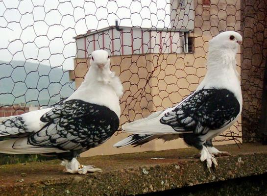

Bu ırk yalnızca Trakya’da Kırklareli, Tekirdağ ve civarındaki küçük kasabalarda yetiştirilmektedir.
Büyük bir olasılıkla Oryantal Roller'ları (makaracıları) ile akraba bir ırk. Vücut yapıları Oryantal Roller'ları andıran orta büyüklükte kuşlardır.
Ancak Oryantallardan farklı olarak bu ırkta 14-18 telekten oluşan kuyruk dik olmayıp genellikle kanatlar kuyruğun üzerinde taşınır.
Kanatları kuyruk yanında, birini kuyruk altında ya da ikisini de kuyruk altında taşıyan kuşlara rastlanmaktadır.
Böyle bireyler genelde melez hayvanlardır. Zira son yıllarda Balkan Ülkelerinden bir çok güvercin ırkı ithal edilmiştir.
Melezlenme etkisi kısalan gagalardan da belli olmaktadır. Safkan (saf irk) hayvanlarda gaga orta boydadır.
Bu irkin yalnızca düz beyaz, siyah, siyah şeritli dumanlı mavi, kırmızı ve nadir olarak sarı ve dumanlı çakmaklı renkleri mevcuttur.
Mavilerine küllü, çakmaklılarına;tekir; ve sarılarına ;kanarya adı verilmektedir. Renkli kuşlarda beyaz tüylerin olmaması konusunda yetiştiriciler çok duyarlıdırlar.
Gaga rengi tüm tüy renklerinde beyaz olup, ucunda kusun tüy rengine bagli bir leke olur. Mavilerde mor gaga rengine de rastlanılmaktadır.
Beyazlar haricinde hepsinde göz rengi açıktır. Beyazlarda sadece siyah gözlülere rastlanır. Orta uzunluktaki bacaklar tüysüzdür.
Bu konuda da yetiştiriciler çok duyarlıdırlar.
O kadar ki, yuvadaki yavruların ayaklarında geçici çok küçük tüylerin görülmesi (Bu tüyler genellikle yavruluk tüy değişiminde dökülmekte ve yerlerine yenileri gelmemektedir.), diğer özellikleri bakımından ne kadar mükemmel olurlarsa olsunlar damızlıkta kullanılmazlar.
Bu ırkta tepeli veya tepesiz kuşlar görülmektedir. Tepe ensenin altından başlamalı, enseyi iyi sarmalı ve iki yanında, aşaği yukarı kulak altında belirgin tepe gülleri görülmelidir.
Tek tarafta gül, yarık görünüm, ensede yukarıdan başlayan tepe ve dar tepeli kuşlar damızlıkta kullanılmazlar.
Her rengin kendi rengi ile çiftleştirilmesi konusunda yetiştiriciler duyarlı olduklarından renkler arasında belirli bir yapısal farklılık göze çarpar.
Bu durum özellikle beyazlar için geçerlidir. Zira renkli kuşlarin aralarında çiftleştirilmelerinden yine düz renkli yavrular elde edilmektedir.
Dolayısıyla bu tür çiftleşmeler nispeten tolere edilmektedirler. Ancak çiftlerden birinin beyaz olması durumunda yavrular alaca olmaktadır.
Bu kuşlar çok ürkektirler. O kadarki kümese girdiğinizde sizi sesleriyle karşılarlar ve birini yakalamaya kalktığınızda duvarlara tırmanırlar.
Bu ırkın yetiştiricileri iyi uçuş özelliğine sahip güzel kuşlar yetiştirmeyi amaç edinmişlerdir.
Ancak son yıllarda dış görünüşe daha fazla ağırlık verildiği için bu güvercinlerin uçuş özellikleri gerilemiştir.
Daha öncede andığım gibi, Balkanlardan getirilen ve melezlenen kuşların gösteri kuşları olmaları bu olguyu hızlandırmıştır.
Eskiden uçuş özellikleri görünümlerinden önce gelirdi. Uzun, yüksek uçan ve sık sık takla (makara) atmayan ancak kaliteli takla (makara) atan kuşlara değer verilirdi.
Eskiden toplu halde yükselen hatlara rastlanılırdı ve bunlar belli bir yükseklikten sonra önce birisi kendisini ip gibi takla atarak aşağıya salar, bunu diğerleri izlerdi.